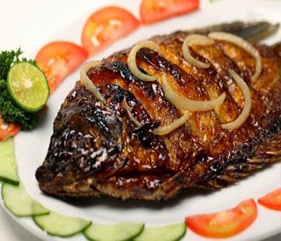

Bahan:
- 1 kg ikan bandeng (3 ekor)
- 1 buah jeruk nipis
- 6 butir bawang merah
- 4 butir bawang putih
- 1 jempol jahe
- 2 sdt ketumbar bubuk sangrai
- 1 sdt munjung garam
Bumbu Kecap:
- 2 sdm minyak goreng
- 4 sdm kecap manis
- 2 lembar daun jeruk, buang tulangnya, iris halus
Cara Membuat:
- Potong ikan menjadi 2 bagian, belah punggungnya. Buang isi perut, insang dan siripnya (jangan disisik ya). Lumuri ikan dgn perasan jeruk nipis, diamkan sebentar.
- Haluskan bawang merah, bawang putih dan jahe. Tambahkan garam dan ketumbar, beri perasan jeruk nipis lalu remas2 dgn jari..
- Lumuri ikan dgn bumbu, diamkan 15 menit..
- Siapkan panggangan (aku pake teflon aja), panggang ikan hingga matang, gunakan api kecil sambil diolesi bumbu kecap saat memanggang.
- Semoga bermanfaat..